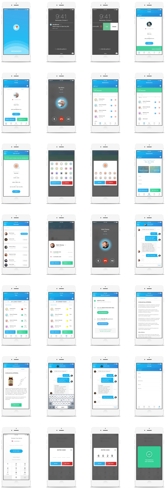

Overview
Objective
As our population ages, many adults are becoming more involved in their parent’s care. Parents are taking more medication, which means their children try to make sure their parents take the right medication and at the appropriate time.
This project aims to design three artifacts:
1) A mobile application that monitors the patient's medication dosage status which is used by the caregiver.
2) An automatic medication dispensing device to help the patient take medication without forgetting.
3) An artifact the patient will always carry that communicates with the other two devices in order to provide visual information and auditory guidance.
Approach
For the mobile application, a scenario and the persona was genearted in order to understand the potential user. Low fidelity wireframes were created using Balsamiq and with Sketch, high fidelity designs were created. Using Framer.js, the prototype was developed and tested on a couple users.
The medication dispensing device's UI and the flow was designed by using Axure RP and Sketch (in progress)
Lastly, the bracelet was constructed using Fusion 360 and was 3D printed.
Duration
August 2016 - December 2016
Project Team
Geunbae Lee | Dr. Tim Purdy
Tools
Balsamiq Mockups | Sketch | Framer.js | Invision | Fusion 360
Links
MedMinder App
Scenario Based Design
Mike is a 28 year old software engineer working at Facebook located in Menlo Park, California. He's originally from Ann Arbor, Michigan where he attended middle school through college and lived with his family. There are three people in his family including his 54 year old mother and 30 year old sister. Mike's father passed away when he was very young because of a tragic car accident. Right now, Mike's mother, Sarah still lives in Michigan and his sister, Jennifer is in Hong Kong working towards finishing her Master's degree.
Recently, Sarah was diagnosed with early stage Osteoporosis, a condition in which bones
become weak and brittle. It can't be cured but treatment may help in reducing the symptoms. So, she needs to stay on healthy diet that provides essential nutrients while avoiding excess sugar,
carbohydrates and fatty foods. Also, she needs physical exercises like aerobic activities everyday to improve her cardiovascular health. Moreover, she is required to take four different types of medication everyday which are:
1) Cholecalciferol for Vitamin D
2) Calcium Phosphate for increasing blood calcium level
3) Calcium Carbonate for supplying the body with calcium and treat acid reflux
4) Alendronic Acid for preventing and treating Osteoporosis
Even after being diagnosed with Osteoporosis, Sarah still goes to work at the local bank where
she has been working for her entire life. Since her husband's death, her co-workers have been very
supportive and caring that she doesn't feel alone (at least while at work). This is the reason why despite of her symptoms, she wakes up every morning happily. On the other hand, Mike worries about his mother that whenever possible, he flies from California to Michigan to look after Sarah. Mike's primary concern is that Sarah sometimes forgets to take her pills because she is so busy at work talking to her clients.
Very recently, there has been a big change in Mike's availability to go visit his mother. He has
become a key player at work after being promoted which means he needs to spend extra time at work.
So, rather than visiting Michigan by flight, he calls her mother three times a day (breakfast, lunch and dinner) to check if she has taken her pills. Although Sarah takes Mike's calls all the time which helps her to take her pills, sometimes she is so busy with work that she fails to meet her daily dosage. Mike became really concerned with his mother's occasional habit. Therefore, through hours of research online, he decided to purchase a MedMinder Automatic Pill Dispenser System which allows him to keep track of his mother's daily pill intakes.
One day when Mike was at work, he received a push notification in his phone that Sarah forgot
to take two Cholecalciferol pills in the morning (Figure 1). He has noticed that the alarm was sent from the MedMinder system located in Sarah's house. Since there was a brief but clear information about which pills Sarah has forgotten displayed on the push notification, Mike needed to reach Sarah. When he swiped the push notification from right to left, he has noticed that he had three options: ignore by clicking on 'x', 'call' and view 'details' (Figure 2). If for some reason Mike cannot call Sarah because of a busy meeting, he could press on 'x' and continue but it will eventually trigger a "are you sure?" pop-up. However, Mike was more likely to either press on the 'call' button to call Sarah (Figure 3), or see the details (Figure 4).
Since it was Sarah's second time forgetting to take Cholecaciferol, Mike needed to see the
details of her plan. So, instead of pressing on a 'call' this time, he logged into the app to view 'details.' the app, (Figure 4) he was able to see that some of the pills that were taken had a checkmark but Cholecalciferol which Sarah didn't take was notified with an exclamation mark. From this page (plan), he could also see by time, by day and by week using the calendar option to explore Sarah's medication schedule. Also, he could also see the description of the Cholecalciferol when he pressed on the pill itself (Figure 5).
After Mike checked on the details of the pills that she was supposed to take before lunch, he
called Sarah to remind her to take her pills. During the conversation, Sarah told him that she has
received a new pill, Ibuprofen today which needed to be added to the app. So, she explained the details of her prescription over the phone and Mike began to add it by first clicking on the 'Meds' at the bottom bar (Figure 6). When the medication section was loaded, it displayed the current pills that Sarah was taking. At the bottom, Mike pressed on "add medication" which took him to a page that allowed him to register for a new medication (Figure 7). At last, he was able to add a new medication by clicking on the 'add' button at the top-right corner.
Wireframe
Persona
Information Flow Chart
User Flow
Connecting to the MedMinder Device
Push alarm notification
Overall user flow
Design
Design Decisions
Push Alarm Notification
As soon as the patient misses his/her medication for the specific time of day, the push notification alarm alerts the caregiver who has MedMinder installed. I decided to provide a choice for the caregiver not only to directly make a call to the patient but also to check and see the details of the medication that the patient has forgotten. Everything being in one swipe action, I think it has better user experience as well as the quickness in making the decision.
View User Medication
In the “Meds” tab section of the MedMinder, I wanted to display the current medication that the patient is taking in a very simple form.The pills are colored and shaped in a form that’s easily recognizable for the patient while it is also consistent with the overall design of the app which looks appealing. Since some of the users may have a lot of medication, I put a search button to quickly find the medication the users are looking for. Lastly, the user is able to easily add a new pill to this list by going through a few easy steps.
View Required Medication
In the “Plan” tab section of the app, since the users are only interested in the current status of the patients’ medication status, I thought displaying just one time period would be appropriate. If curious, the users can toggle to view medications for the past and the future time periods. The display of the status of the medication is also very easy to spot because they are shown in checkmarks, alert and neutral (yellow circle)
Add Medication
When the users add or edit a medication, they can change the color and the shape of the medication. It is suggested that they pick the most similar icons in order to help them remember the medicine.
View Doctor Appointment
In the “Appointment” tab section, I thought having a brief description of the next appointment for the patient would be the most important thing to show. Also, the details of the hospital (direction, ratings and doctors) are some of the lists of things I considered including in this section due thinking and researching on the kinds of things that the users would want. Lastly, the ability to view messages and the detailed information of the doctor will come in handy for the users.
Call / Message Doctor
When the user presses on “My Doctor” from the previous example, the information about the doctor slides up from the bottom. The phone numbers for the doctors will show and the users will have the option to either call him/her or write a message. I considered putting other information in this section such as address, email and etc but I thought these two options will satisfy the need for the users.
Logo Design
User Testing
Participant Name: Miroslav
Gender: Male
Age: 35
Occupation: Part-time Graduate Student
Observation:
Initially when the push alarm notification was enabled, he knew that he needed to swipe in order to see the details of what he could do next. However, his initial swipe was in the opposite direction. The options were, “x”, “call” and “details.” Since I asked him to perform a think-aloud task, he told me that he will go ahead and click on the “details” because he was asked to view the details of the medication that the patient has missed. After that, he said that there was an alert sign on one of the medication so he knew he had to access it somehow. After looking at it for a few seconds, he tried pressing on the medication which took him to the description page.
Feedback:
He thought the app’s visual design was very nice. He told me that he loved how the designs were attractive and the idea of having different colors for the medication was a fantastic idea. Although he said “what if the medications have different shapes?” But, in other designs that I have, I actually have a page that the users can modify the colors as well as the shapes for the medication which I told him about. Going back to the first screen (push alarm notification), he commented that since he checks his emails and messages that appears as a same style, having it appear like so is a great idea. The only thing that he thought may be improved was the alert sign that could maybe have some animation (on/off) effect which can capture the user’s attention.
Participant Name: Eric
Gender: Male
Age: 26
Occupation: Full-time Graduate Student
Observation:
For Eric, I asked him to do a different task which was to connect the app to the Medminder device by entering in the device number and the code that was generated. For this, since I didn’t have the MedMinder device ready and also the generated code wasn’t available, I had to Wizard-of-Oz the testing situation. I told him that the device number and the code will be provided to him during the process but in reality, it will be real numbers that only the users will have access to.
Initially, the splash screen of the app appeared and after a couple second it disappeared, resembling that he is now on the app and needs to connect it to the device. He pressed on the numbers (but obviously didn’t work because it’s a prototype) and the machine number was plugged in after. Since he needed to generate the code for the device, I told him that the code is “6029.” After he had submitted the code, the screen said that the device was now connected to the app.
Feedback:
Same with Miroslav, Eric also thought that the app’s design was very attractive. Although he thought the prototype could be improved a little. He said instead of the screen transitioning from a screen without the device number to a screen with the device number at once, it would be much more interactive if the prototype generated multiple screens with required numbers being plugged into the screen once at a time. (So, the initial screen will have no numbers, after pressing a number it will be plugged in and on and on…). Other good feedback I got from him was, he really liked the color contrast between blue and red which indicated that he should try to keep pressing blue to move on. However, one more suggestion that was made was to keep the code input keyboard consistent with the device number input keyboard.
MedMinder Bracelet
MedMinder Device
User Flow
Design